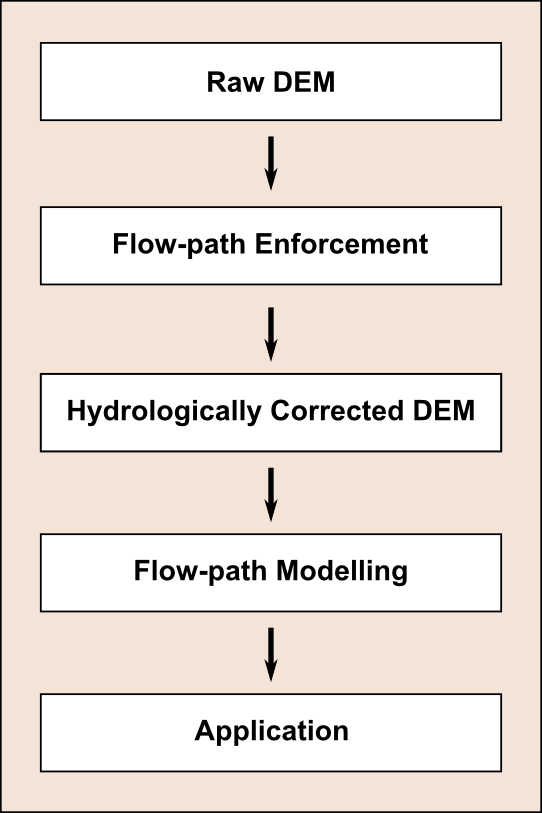
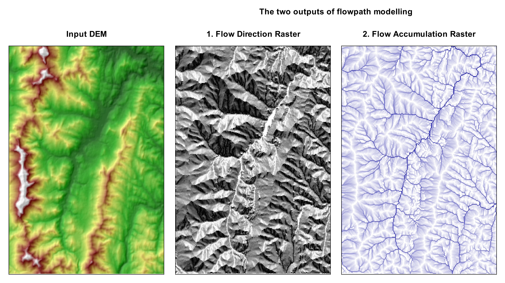
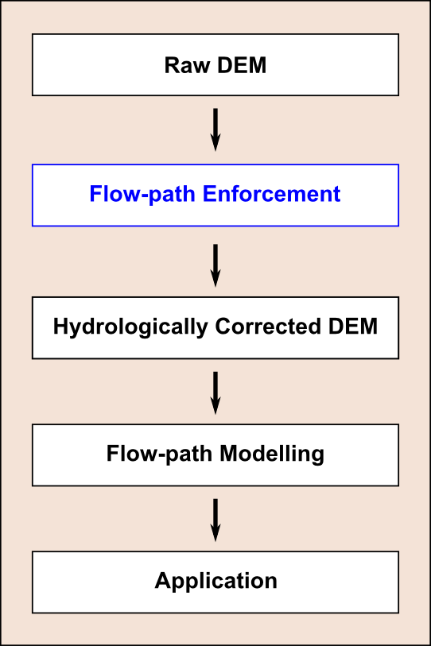
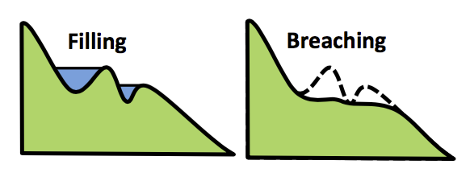
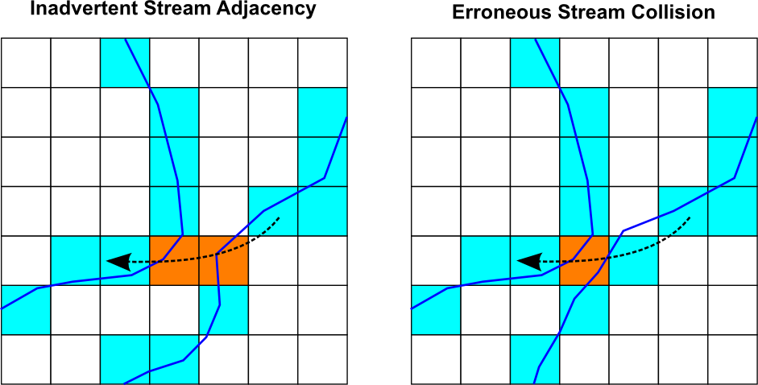
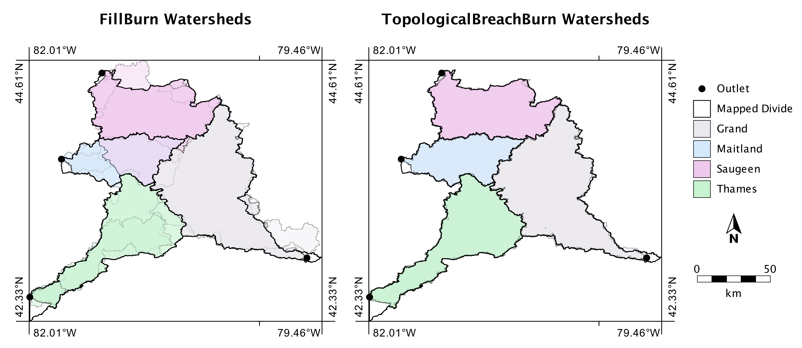
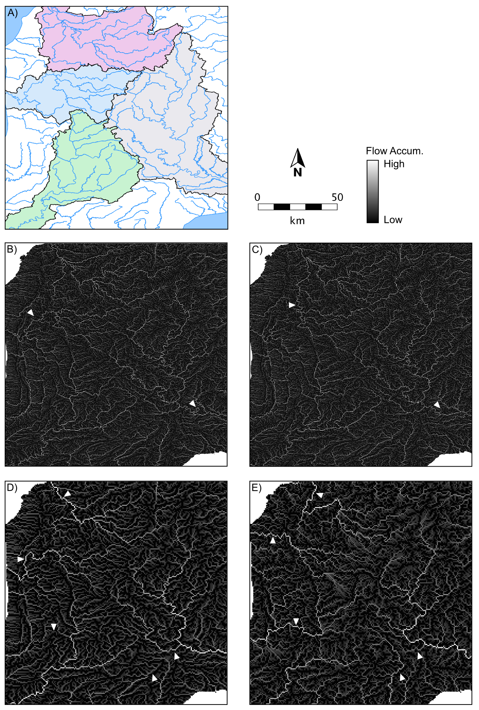
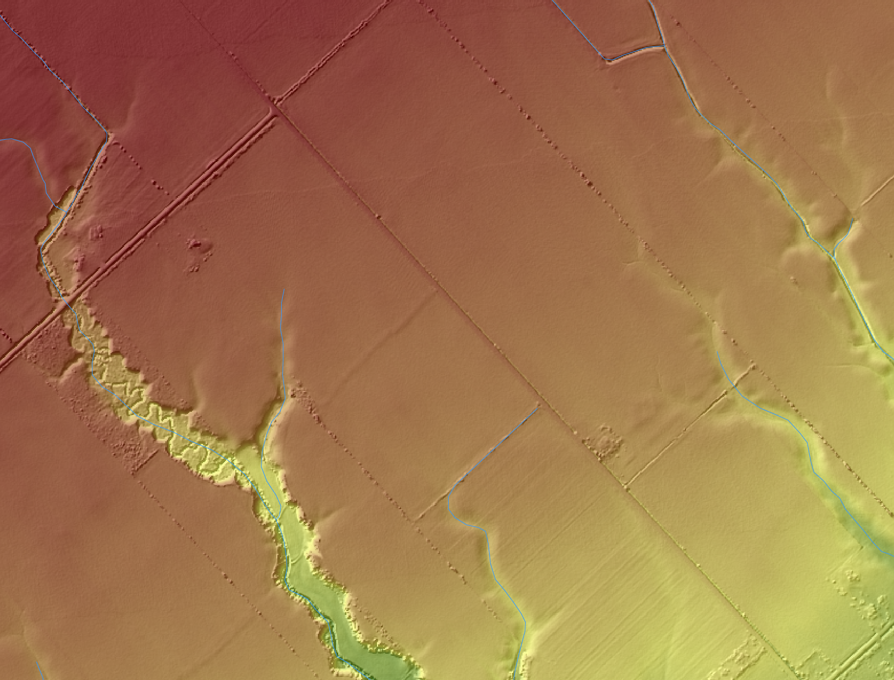

Issues in DEM-based flow-path modelling
Prof. John Lindsay Department of Geography, The University of Guelph January 15, 2016Research context
- My research is in the field of
geomorphometry .- Sub-discipline of geomatics concerned with extracting information from digital topographic data (DEMs) to model or better understand landscape processes.
- Produce and evaluate
innovative geomorphometric techniques to solvereal world problems and to makecontribution to the theory of the discipline in which it is applied.
DEMs are used to model surface drainage
- Based on two basic assumptions:
Topography is the dominant factor affecting the lateral distribution of water.- Upslope area can be used as a
surrogate for discharge
- Surface flow-path information is used to:
- Delineate watershed divides and sub-basins
- Map landforms and soils
- Analyze stream networks
- Model variable source areas (VSA), runoff, and flooding
- Model sediment transport, erosion sources, and contaminant migration
The spatial hydrology workflow
The spatial hydrology workflow
The spatial hydrology workflow
Flow-path enforcement: Sink removal
- DEMs that haven't had flow enforcement will contain
sinks , i.e. topographic depressions and flats. - Sinks are caused by errors and natural processes.
Sinks must be removed from DEMs used in hydrological applications.

- Lindsay JB. In Press. Efficient hybrid breaching-filling sink removal methods for flow path enforcement in digital elevation models. Hydrological Processes.
- Lindsay J, Dhun K. 2015. Modelling surface drainage patterns in altered landscapes using LiDAR. International Journal of Geographical Information Science 29: 1-15.
Flow-path enforcement: Stream Burning
- Sometimes the 'digital stream' in the DEM doesn't align with existing mapped stream data.
- When this happens, practitioners have two options:
Re-interpolate the DEM , incorporating the mapped hydrography data into the interpolation process (e.g. ANUDEM),Burn the mapped streams into the DEM.
Stream burning
- The practice of etching a mapped vector stream network into a raster DEM.

Stream burning
- A simple operation that can be performed in any GIS:
- Rasterize the vector streams layer
- Thin the raster stream lines
- Decrement elevations along the raster streams
- Fill the DEM.
- It is extremely common in practice and has been incorporated into several national DEM data products.
Stream burning
- I have long discouraged widespread application of stream burning due its limitations.
- J.B. Lindsay (In press) The practice of DEM stream burning revisited. Earth Surface Processes & Landforms.
- There is an implicit assumption that the mapped hydrography data is of a
higher quality than the DEM-based streams.- The blue lines on topo-maps are often of uneven accuracy particularly in headwaters.
- We always tell our GIS students to exercise extreme caution when
combining data layers of vastly different scale .
Topological errors due to rasterization
- The result of erroneous adjacency and collisions is the
spurious piracy of upslope catchment areas . - The occurrence of these errors increases with
stream density relative to the grid cell size.
The TopologicalBreachBurn algorithm
- A new method that aims to
reduce the occurrence and impact of topological errors during burning by:- Tracking the occurrence of collisions during rasterization and
pruning smaller headwater streams from the vector data when the error frequency is higher than a specified tolerance; Prioritizing larger stream links during the rasterization where there are stream collisions; and,Confining in-stream flow between neighboring cells of the same link identifier value except at link end nodes.
- Tracking the occurrence of collisions during rasterization and
Efficient breaching-based flow-path enforcement
- An efficient
priority-flood algorithm was used to visit DEM cells in the flood order. - Modified to give stream cells priority.

Study site and data

Study site and data
- Five test DEM data sources with resolutions ranging from 1 arcsecond (~27 m) to 30 arcseconds (~800 m).
- Used the Ontario Hydro Network (OHN) watercourse data set.
- Original source data derived from 1:10 000 scale photogrammetrically mapped Ontario Base Map (OBM) data (Ontario Ministry of Natural Resources, 1994).
Stream pruning results
- Resulting stream pruning after applying TopologicalBreachBurn to the test DEMs
Comparison of watershed boundaries
Comparison of watershed boundaries
- Results of applying TopologicalBreachBurn (TBB) to the test DEMs, compared with the FillBurn (FB) method.
Comparison of modeled surface flow-paths
LiDAR and stream burning
Conclusions
- The TopologicalBreachBurn tool prunes a vector hydrography layer to a level of detail that matches the raster DEM.
- Prunning reduces the occurrence of erroneous stream piracy caused by the rasterization of multiple competing stream links to the same DEM grid cell.
- The algorithm restricts in-channel flow to individual reaches, thereby reducing stream piracy in areas of spurious stream adjacency.
Conclusions
- Application to a large region within southwestern Ontario and five test DEMs with widely varying grid resolutions demonstrated that, compared with traditional stream burning methods, the TopologicalBreachBurn method can produce very accurate drainage patterns and watershed boundaries even at coarser resolutions.
- Practitioners must consider the assumptions the technique and should not apply it in situations where the DEM is of higher accuracy than the mapped hydrography.
Thank you!
- I would be happy to answer any questions.
Research support has been provided by: